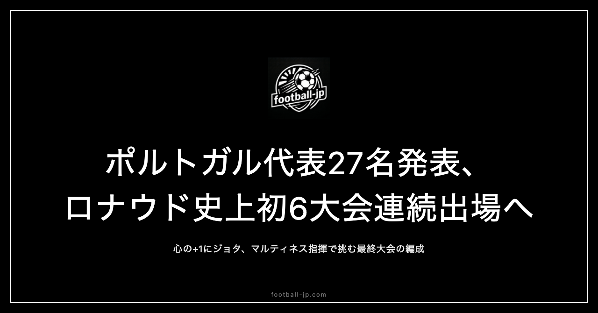

W杯ポルトガル代表27名発表｜ロナウド史上初6大会連続出場、心の+1にジョタ
現地時間2026年5月19日、マルティネス監督名義でW杯2026ポルトガル代表27名が発表された。41歳のクリスチアーノ・ロナウドが史上初となる6大会連続W杯出場を果たす。そして正式な27名に加え、2025年の事故で28歳の若さで亡くなったディオゴ・ジョタが「心の+1」として語られる——そのような特別な文脈を持つ27名を読み解く。

リーグ別分布：イングランド組最多・サウジ組3名
27名の所属クラブ別リーグ分布を確認する。
| リーグ | 人数 |
|---|---|
| 🏴 イングランド（プレミアリーグ等） | 7名 |
| 🇵🇹 ポルトガル国内（プリメイラ・リーガ） | 5名 |
| 🇪🇸 スペイン（ラ・リーガ） | 4名 |
| 🇫🇷 フランス（リーグ・アン） | 4名 |
| 🇸🇦 サウジアラビア（サウジ・プロリーグ） | 3名 |
| 🇮🇹 イタリア（セリエA） | 2名 |
| 🇹🇷 トルコ（スュペル・リグ） | 2名 |
ポジション別の全選手リストは以下の通りだ。
GK（4名）
- ディオゴ・コスタ（FCポルト🇵🇹、1999年9月19日生）
- ルイ・シルバ（スポルティングCP🇵🇹、1994年2月7日生）
- ジョゼ・サ（ウォルヴァーハンプトン🏴、1993年1月17日生）
- リカルド・ベーリョ（ゲンチレルビルリイ🇹🇷、1998年8月20日生）
DF（9名）
- ルベン・ディアス（マンチェスター・シティ🏴、1997年5月14日生）
- ジョアン・カンセロ（FCバルセロナ🇪🇸、1994年5月27日生）
- ヌーノ・メンデス（パリ・サンジェルマン🇫🇷、2002年6月19日生）
- ゴンサロ・イナシオ（スポルティングCP🇵🇹、2001年8月25日生）
- トマース・アラウージョ（SLベンフィカ🇵🇹、2002年5月16日生）
- ディオゴ・ダロト（マンチェスター・ユナイテッド🏴、1999年3月18日生）
- マテウス・ヌネス（マンチェスター・シティ🏴、1998年8月27日生）
- ネルソン・セメド（フェネルバフチェ🇹🇷、1993年11月16日生）
- レナト・ベイガ（ビジャレアル🇪🇸、2003年7月29日生）
MF（6名）
- ブルーノ・フェルナンデス（マンチェスター・ユナイテッド🏴、1994年9月8日生）
- ベルナルド・シルバ（マンチェスター・シティ🏴、1994年8月10日生）
- ヴィティーニャ（パリ・サンジェルマン🇫🇷、2000年2月13日生）
- ジョアン・ネベス（パリ・サンジェルマン🇫🇷、2004年9月27日生）
- ルベン・ネベス（アル・ヒラル🇸🇦、1997年3月13日生）
- サム・コスタ（マジョルカ🇪🇸、2000年11月27日生）
FW（8名）
- クリスチアーノ・ロナウド（アル・ナスル🇸🇦、1985年2月5日生）★主将・41歳・6大会連続
- ラファエル・レオン（ACミラン🇮🇹、1999年6月10日生）
- ゴンサロ・ラモス（パリ・サンジェルマン🇫🇷、2001年6月20日生）
- ジョアン・フェリックス（アル・ナスル🇸🇦、1999年11月10日生）
- ペドロ・ネト（チェルシー🏴、2000年3月9日生）
- フランシスコ・コンセイソン（ユヴェントス🇮🇹、2002年12月14日生）
- ゴンサロ・ゲデス（レアル・ソシエダ🇪🇸、1996年11月29日生）
- トリンコン（スポルティングCP🇵🇹、1999年12月29日生）
GK 4人：ディオゴ・コスタを主軸とした層
GKはディオゴ・コスタ（FCポルト🇵🇹）が正GKとして揺るぎない地位にある。26歳、足元の精度・1対1のセービング・エリア内のコーチング力を兼ね備えた現代型GKとして、2021年以降代表の柱として信頼を得ている。4番手のリカルド・ベーリョ（27歳）は将来性のある若手GKだ。
DF 9人：ルベン・ディアスを中心とした守備ライン
DFラインの中心はルベン・ディアス（マンチェスター・シティ🏴）。29歳、マンチェスター・シティでプレミアリーグ優勝・CLなど数々のタイトルに貢献してきたCBだ。対人守備の強さ、空中戦の制空力、ビルドアップの精度のすべてにおいて世界最高水準にある選手で、ポルトガル代表のバックラインの軸として絶対的な存在感がある。
左サイドバックのヌーノ・メンデス（PSG🇫🇷）は23歳。スピードと攻撃参加が持ち味で、左サイドからの仕掛けと高精度のクロスはポルトガル代表の武器の一つだ。右サイドバックのジョアン・カンセロ（FCバルセロナ🇪🇸）はインサイドに入ってゲームを作る攻撃的なSBとして知られており、マルティネスの戦術においても重要な役割を担う。
MF 6人：ブルーノ・フェルナンデスとベルナルド・シルバ
軸はブルーノ・フェルナンデス（マンチェスター・ユナイテッド🏴）とベルナルド・シルバ（マンチェスター・シティ🏴）の二枚。ブルーノは直接FK・中距離シュート・スルーパスと攻撃の多様な起点になれる攻撃的MFで、ベルナルドはテンポコントロールと狭いスペースを抜け出すドリブルの精度が現代サッカーの中盤で最高水準にある選手だ。
ヴィティーニャ（PSG🇫🇷）は26歳のボランチで、PSGで攻守のハブとして機能するアンカー的存在。ジョアン・ネベス（PSG🇫🇷）は21歳、PSGで急成長中の若き中盤だ。
FW 8人：ロナウドの最終大会と新世代の並立
クリスチアーノ・ロナウド（アル・ナスル🇸🇦）は41歳、史上初の6大会連続W杯出場という記録を手にした選手だ。2006年ドイツ・2010年南アフリカ・2014年ブラジル・2018年ロシア・2022年カタール・2026年北米。この数字が一つの事実として存在することの重みを、簡単に語ることはできない。
ラファエル・レオン（ACミラン🇮🇹）は26歳の左ウィンガー。スピードと技術の組み合わせが持ち味で、一対一で相手を置き去りにする能力は世界のトップウィンガーに引けを取らない。ゴンサロ・ラモス（PSG🇫🇷）は24歳のセンターFWで、2022年カタール大会でハットトリックを達成した実績がある。ロナウドがサブ起用に回るシナリオでは先発9番の候補だ。
ディオゴ・ジョタ——27名の隣に立つ心の+1
正式27名（GK4・DF9・MF6・FW8）に加えて、もう一人、心の+1がいる。
ディオゴ・ジョタ（Diogo Jota）。2025年、交通事故によって28歳という若さで命を落としたポルトガル代表の主力選手だ。リバプールでプレミアリーグ制覇・CLとさまざまなタイトルを経験し、ポルトガル代表でも44試合22得点という数字を残してきた。
マルティネス監督は2026年のW杯メンバー発表に際して、ジョタをこのチームの精神的支柱として語った。
「彼の魂と闘志が、このチームの"心の+1"だ」
27名がポルトガル代表の選手として北米のピッチに立つとき、その背後には彼の名前がある。サッカーの試合は結果で語られる。でも時に、ピッチの外にある物語がチームを動かすことがある。今大会のポルトガルには、そのどちらも存在する。
優勝候補としての構造分析
ポルトガルは今大会の優勝候補の一角だ。ただしフランス・スペイン・イングランド・ブラジルと横並びの「最上位グループ」かどうかは整理が必要で、過去のW杯ベスト戦績は2006年ドイツ大会の4位だ。カタール2022でのベスト8（モロッコ敗退）から、決勝トーナメントで一段上積みできるかどうかが問いになる。
ロナウドの最終大会という文脈が選手たちの動機として働く可能性は高い。41歳の主将がこれ以上の舞台を求めることはない。その事実が27名に「一緒に連れて行く」という感情を生む可能性がある。ジョタの魂を背負った物語性が加わることで、通常のW杯とは異なる結束が生まれる条件が揃っている。
個人の質はフランス・スペインに引けを取らない。ロナウドが最後にW杯で見せる景色がどこまでの高さになるか——それが今大会の見どころの一つだ。